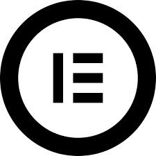
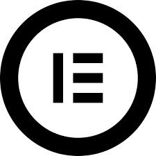

Développement
Data
Systèmes & Réseaux
Marketing & Communication
Cybersécurité
Gestion de Projet
Web Designer UI/UX
Business
Bureautique
Bienvenue sur mon SiteWeb/Portfolio !
Je suis polyvalent de formation :
- Développeur FullStack,
- WebDesigner UI/UX,
- Technicien informatique,
- Support informatique
& les métiers Bureautique.
Développement
Data
Systèmes & Réseaux
Marketing & Communication
Cybersécurité
Gestion de Projet
Web Designer UI/UX
Business
Bureautique
Mes Projets Tech
Mes Missions Tech
Ma stack moderne pour la création d'un SaaS

Utilisation pour l'authentification
Ma stack pour la création d'une application web FullStack
Ma Stack Java si le projet l'impose

Utilisation d'Eclipse si le projet l'impose
Ma stack pour un Site Web vitrine professionel
 

Utilisation de WordPress6 avec Elementor comme CMS

Utilisation pour le deploiement
Ma stack pour créer une boutique en ligne
" Je suis toujours à la recherche de nouvelles opportunités,
que ce soit pour des missions freelance ou des collaborations professionnelles.
N'hésitez pas à me contacter si vous avez un projet en tête ou si vous
souhaitez en savoir plus sur ce que je peux apporter à votre équipe. "